Problem Definition
3D Tic-Tac-Toe: Implementating minimax algorithms with alpha-beta pruning to play 4x4x4 tic-tac-toe. The project would need comprehensive understanding of minimax, alpha-beta pruning, and the rules for the 4x4x4 tic-tac-toe. The assumption I need to make is that the result of the game does not depend on the order of the player, namely, the game is expected to be a fair game. The anticipated difficulty would be figuring out a way to calculate the heuristic value so that in the alpha-beta pruning process, it could be efficient and meaningful.
Method and Implementation
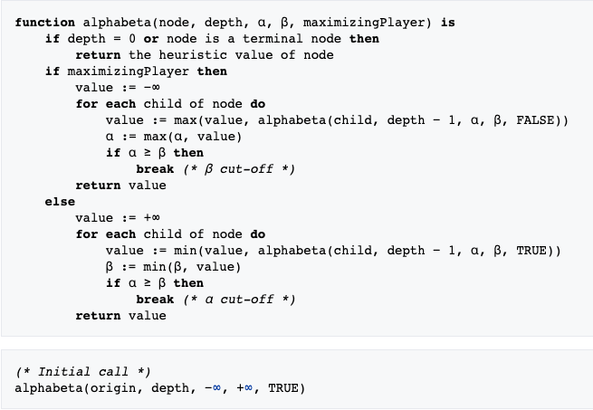
(source: https://en.wikipedia.org/wiki/Alpha%E2%80%93beta_pruning)
To use the alphabeta algorithm, I treat each state of the game as a node, which is just the current board. Each child node is defined as all the valid moves on the board, which are the positions that haven't been marked by any player. The terminal node is the end game, and per tic-tac-toe rules, it means that one of the players has successfully marked all the positions on a wining line.
There is a total of 76 wining lines for the game: for each horizontal plane, there is a total of (4+4+2)*4 = 40 lines, and for the vertical planes, there is a total of 4*4+8*2 = 32 lines. Lastly, the diagonals of the whole contribute 4 winning lines for the game.
In general, my implementation translates the pseudocode into Java as project required. My AI always see itself as the maximizing player, and the opponent as the minimizing player. As for calculating the heuristic values, I define a list to store the values. And the index is calculated as 5*(my marks in a line)+1*(opponent's marks in a line). Also, I assign -1, -100, -10000, -1000000, 10, 100, 10000, and 1000000 to the list when opponent has 1, 2, 3, or 4 or when I have 1, 2, 3, or 4 marks on a winning line respectively. This way, I could make sure that my AI will intervene when there is still a chance to prevent the opponent from winning, and that my AI will always choose the move that will likely win because it will result in a higher score. The heuristic values for all other cases which means the positions on a winning line are marked by both players, so there is no point to assign values as the line is useless to both player, and therefore, can be ignored.
Code Outline
1. minimax(boolean myTurn, int depth, int alpha, int beta): this function runs recuresively to carry out the key steps described as the pseudocode above.
2. evaluation(): this function will calculate the overall score of the whole board after making an attempt move just to evaluate the score of this move.
3. possibleMoves(): this will generate a list of valid moves given current state of the game, and will be used in minimax.
Experiments
A random player is given in the skeleton code. My AI was tested by playing against this random player first for 100 rounds with 2, 3, and 4 level lookahead. Then the AI with different level of lookahead played against each other for 100 rounds.
The evaluation is simply the number of games each player wins.
Results
Results | |||
| Player 1 | Player 2 | P1 wins : P2 wins | P1 Avg. Decision Time |
| 2-level lookahead | Random | 100:0 | 0.0ms |
| 3-level lookahead | Random | 100:0 | 0.0ms |
| 4-level lookahead | Random | 100:0 | 0.0ms |
| 4-level lookahead | 3-level lookahead | 100:0 | 0.083ms |
| 4-level lookahead | 2-level lookahead | 70:30 | 0.0ms |
| 3-level lookahead | 2-level lookahead | 88:12 | 0.125ms |
Discussion
The algorithm works pretty well as more level of lookahead generates better result as expected. Although as the level of lookahead get more, the time it takes to make a decision gets longer. This is because the algorithm doesn't have any data structure optimization as the player could simply keep an internal state of the game and store more information like which winning line accross a certain position, this would speed up the process.
The interesting thing is that the time of each game gets longer when the level of lookahead between two players differ more. I guess this is because with less level lookahead, the player become unpredictable to the high level player, and this would requires more of alpha-beta pruning process to get an accurate result.
Detail Breakdown of a game between the 4-level lookahead and the 3-level lookahead players
X: 4-level player O: 3-level player
Analyze from the persepective of the 4-level player
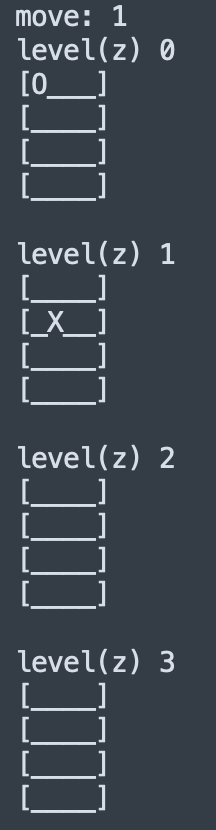
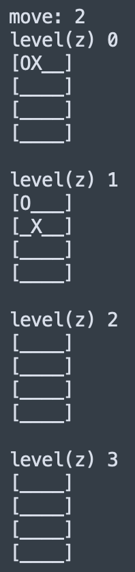
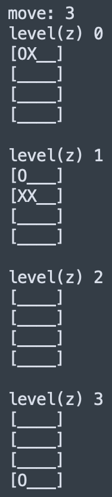
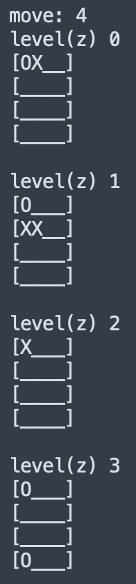
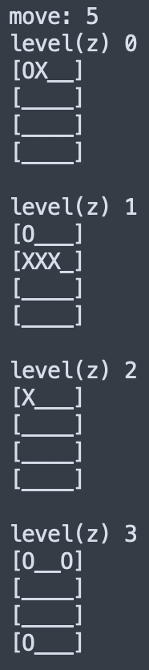
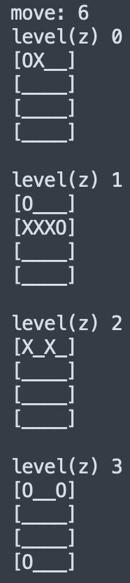
move2: X player tries to build the diagonal line on the plane parallel to the sides
move3: X player tries to build a horizontal line
move4: O player almost got a vertical line on the upper corner. X player intervened by marked (0,0,2)
move5: X player continues to build the horizontal line started in move3
move6: O player intervenes the line, and X player tries a new line on level 2
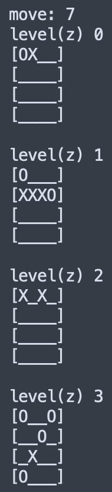
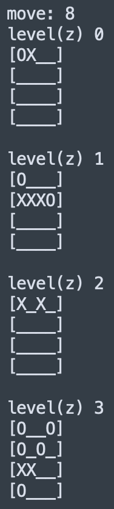
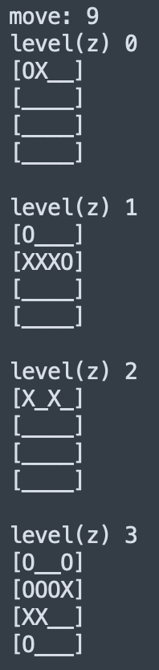
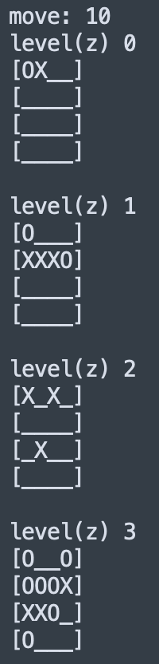
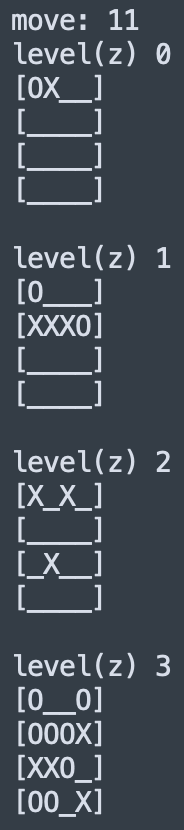
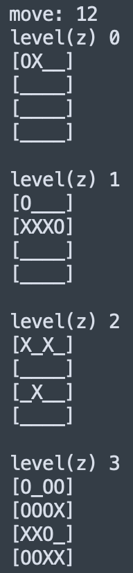
move7: X finds out that O has 3 marks on a winning line on level 3, intervene
move8: O has another winning line with only its 3 marks, X intervene again
move9: why does O have so many winning lines?? Again, another on level 3, X intervene
move10: nothing to say, they play their own game
move11: O has another winning line which is the diagonal line on level 3, X must intervene. Notice there are also 2 potential winning lines on level three, vertical 3 and horizontal 1.
move12: As expected, there is nothing X can do.
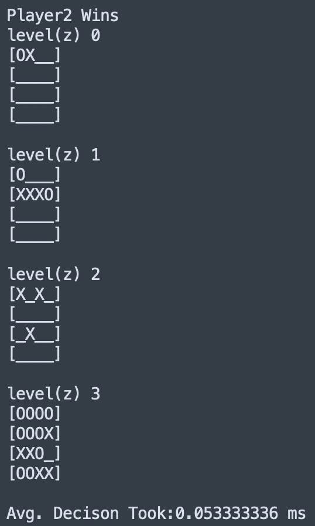
The calculate of heuristic value still requires future work.
Conclusions
For this assignemnt, my implementation of the minimax algorithm with alpha-beta prunning acheives its basic functionality as it dominates the random player. However, this is certainly not enough. This is still fun, and again, AI beats human. I haven't won once when playing with my 5 level lookahead AI. Sad. I can't beat my own creation. Does that make me smart or not?
Credits and Bibliography